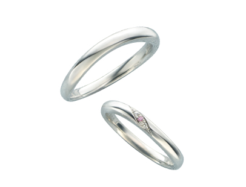
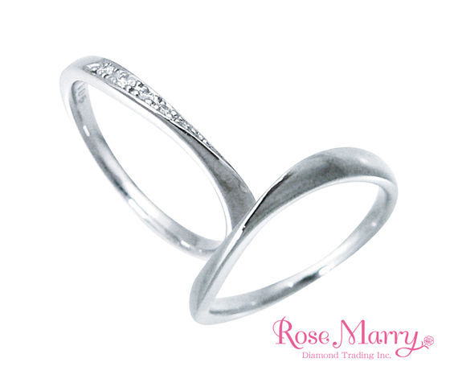
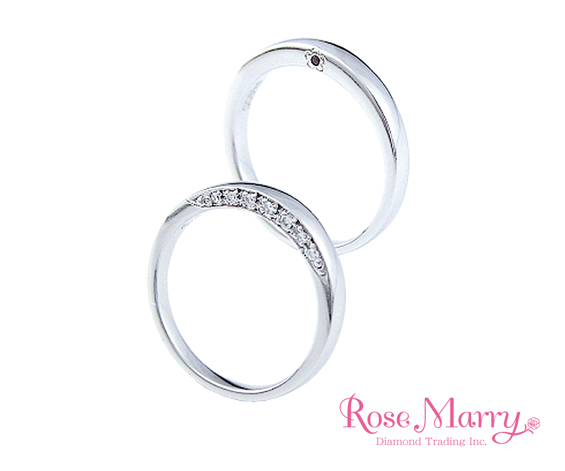

デザインと着け心地
真っすぐなライン、指に沿うカーブ、指をすっきり見せるV字。写真で好みを絞り、店頭では幅・厚み・手を動かしたときの感覚も確かめましょう。
MARRIAGE RINGS
毎日に寄り添う結婚指輪を、ブランドやデザインから。
サカイの取扱い商品を見比べながら、おふたりの好みを見つけてください。
この条件に合う掲載商品はありません。条件を変更するか、店舗へご相談ください。

Rose Marry
1本 ¥200,200〜
素材・価格・指輪の詳細 →
Rose Marry
1本 ¥200,200
素材・価格・指輪の詳細 →
Rose Marry
K10 ¥41,500 / Pt900 ¥118,800
素材・価格・指輪の詳細 →予算検索は公式掲載のペア開始価格を基準にしています。1本価格のみの商品・価格未確定の商品は「すべて」でご覧いただけます。
公式サイト掲載内容を2026年10月5日に確認。価格は掲載時点の記載で、最新の販売価格・税込／税別・納期・取扱店舗は店頭でご確認ください。期間限定コレクションは本試作の掲載対象に含めていません。
既存公式サイトの掲載商品も確認する →FIND YOUR STYLE
真っすぐなライン、指に沿うカーブ、指をすっきり見せるV字。写真で好みを絞り、店頭では幅・厚み・手を動かしたときの感覚も確かめましょう。
プラチナやゴールドなど、素材によって色合いや印象が変わります。普段の服装や生活を考え、手入れ方法と修理条件も確認します。
価格を比較するときは2本の合計を確認。刻印・素材変更などの追加費用と、必要な日までに受け取れるかも相談しましょう。
MARRIAGE RING FAQ
商品ごとに異なります。一覧では「1本」「ペア」の区別を表示し、商品詳細に公式サイトの掲載内容を載せています。選ぶ素材・サイズによって価格が変わることがあります。
日常で身に着けるものなので、それぞれの好みや着け心地を大切にしましょう。素材や色、刻印など、共通点を持たせる選び方もあります。対応可能な組み合わせは店舗へご相談ください。
ブランド・モデル・加工内容によって異なります。必要な日程と希望商品をお伝えいただき、店舗で納期・サイズ直しの可否・費用をご確認ください。
展示商品は店舗により異なります。希望商品を添えてご相談ください。
来店を予約する ↗